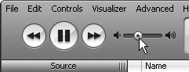

#15573 1 2007-06-08T00:35:21Z TribulatioN when I click on the following link, it says I don't have permission.. how can I fix that?
http://metanet.2.forumer.com/index.php?showtopic=17697#328578 33 2007-06-08T00:53:51Z TribulatioN Yanking Out Uberly Rambunctious Monkeys Of Mystical Antarctica
DHHABCAA
#328581 70 2007-06-08T00:59:54Z TribulatioN I shoot the button with an ultra futuristic laserbeam and then I get my chance to look all tough.
If you press this button, you will go up, if you don't press this button, you will be stuck in the elevator.
#328582 4 2007-06-08T01:01:02Z TribulatioN umm jimmy_mcnabb posted this on a comment on a map.
http://numa.notdot.net/map/91990#328584 7 2007-06-08T01:03:11Z TribulatioN just like how you die landing on the flat side of a 2 or 3 tile with a mine on the slanted side.
#328587 257 2007-06-08T01:07:47Z TribulatioN Ricky
#15575 1 2007-06-08T01:24:45Z TribulatioN just give links to it.
www.youtube.com/thewinekone
funniest guy ever. period.
#328599 262 2007-06-08T01:25:59Z TribulatioN Thomas.
Thomas Jenkins
#328601 954 2007-06-08T01:27:25Z TribulatioN 17 1/2
i think once you guess their age, guess the birthdate.
#328603 597 2007-06-08T01:28:52Z TribulatioN usaswim
#328606 6 2007-06-08T01:42:15Z TribulatioN ok thanks, it works now.

#15576 1 2007-06-08T01:43:06Z TribulatioN if there was a link to the top. do you think so too?
#328624 5 2007-06-08T02:22:51Z TribulatioN I mean it as in you are at the bottom of the page, so you would have to scroll all the way up, rather than clicking "top". do you get it now, I think that made sense

#328663 30 2007-06-08T03:50:20Z TribulatioN so can the map be anything? as in tileset, race, etc etc?
#328668 8 2007-06-08T04:05:44Z TribulatioN What is it, anyway?
Flyff pronounced "fliff" Stands for Fly For Fun. It is an MMORPG.
There's more but to make it easy,
Flyff Fansite
It's a fun game, get to know it, and you might play it more often than N.

#328670 266 2007-06-08T04:10:24Z TribulatioN Richard Giles.
#328671 605 2007-06-08T04:11:29Z TribulatioN the almighty usaswim

#328673 11 2007-06-08T04:13:15Z TribulatioN oh well home key works too,
edit:whoa, they actually put the top link on (the upwards facing arrow on the right for those who didn't notice)
#328950 6 2007-06-09T01:05:37Z TribulatioN what if metanet made their own type of Word Processor? Like Metanet Word, so we can save it to that? Or is it too much of a hassle?
#328952 959 2007-06-09T01:08:49Z TribulatioN Looking under ages take away all the fun? I'n not gonna bother so 16 and 3/4
#328989 43 2007-06-09T02:44:26Z TribulatioN #329040 18 2007-06-09T04:14:44Z TribulatioN Not N2. Yet. They've gotta crank out v1.5 & Robotology 1st!
They've still been busy.
and they are still trying to get N as an arcade game for Xbox360, PSP, etc etc. But then I would still rather play it on my comp, unless you can make levels on the game systems.
#329044 25 2007-06-09T04:18:25Z TribulatioN I couldn't even wall jump at one time, and was stuck on the floor for a long time.
#329450 55 2007-06-10T04:04:39Z TribulatioN Second Map
Chronillusionismaticality
It's a tileset.
#329454 3 2007-06-10T04:08:32Z TribulatioN the second one is my fave, very emo but very intricately amazing.
#329455 57 2007-06-10T04:09:59Z TribulatioN Contest of Themes!
EDIT: You must only follow the theme!
Any type of map is allowed, but follow the theme.
yes I can..

#329457 15 2007-06-10T04:12:17Z TribulatioN hmmm infinite loops, something tells me someone, if it is in the next version, will make a N art out of that..
It could actually look very good though..
#329460 10 2007-06-10T04:15:32Z TribulatioN there are different features, like mac would be good for more leisure type things and PC's are better for bussiness. (at least in my opinion)
#329467 60 2007-06-10T04:26:29Z TribulatioN well then make your rules clearer to, in the meantime, don't rate it yet then.

Here's a playable version.
Chronillusionismaticalitranical
The key is the most difficult part
#329711 15 2007-06-10T20:35:12Z TribulatioN there could also be an all time leaders in time playing N.
I like this idea.
#335830 796 2007-06-26T03:41:30Z TribulatioN Might as well..
Primary colours: Red and White, maybe gray
Theme: Fire/Electric.
Renders/images:Nah
Text:TribulatioN
Complexity: Simple
Matching avatar (yes or no): sure.
Dimensions (size): 500 width x 150 height
Preferred artist (optional): Element/Jakel
#336857 42 2007-06-29T04:22:05Z TribulatioN I might get one, but they'll be sold out pretty quick.
#338101 814 2007-07-03T00:36:36Z TribulatioN on second thought, anyone can make mine, not just element or Jakel.
#343105 840 2007-07-14T22:27:58Z TribulatioN what happened to mine??
#16234 1 2007-07-14T22:35:17Z TribulatioN What if there was a sidebar that helps you out. It could show how many pieces of gold left, and how many door switches left. Or many other things that I can't think of due to hot weather =\
And N having Stamina? Like he can only run for so long, and walk to get more stamina, and stamina buttons to add more? Something like this could go onto the Sidebar.. It would add a new perspective into the game, and could also affect highscores. iunno just 2 ideas.
#344193 4709 2007-07-17T18:43:47Z TribulatioN K I rated evil___'s maps
This one's new.
http://numa.notdot.net/map/96724
This needs to be rated, other's I don't care so much
 http://numa.notdot.net/map/94117
http://numa.notdot.net/map/94117#344566 852 2007-07-18T19:17:11Z TribulatioN And mine still isn't made sigh.
#344683 4721 2007-07-18T22:15:47Z TribulatioN rated mr x's
still need this one rated.
http://numa.notdot.net/map/96724#344693 21 2007-07-18T22:30:32Z TribulatioN Isn't there someone who is like astheskyisgreen? That's more appreciation for astheoceansblue than wanting popularity.
#346046 876 2007-07-22T02:45:30Z TribulatioN TribulatioN

+ 
It's hard to incorporate both lightning and fire in the same sig, because they are almost the same color. There was no room to add extra red or gray, so it's being left at that.
Hope you enjoy! Also, please credit.
Thanks. It turned out better than expected =)
#346233 4748 2007-07-22T18:32:40Z TribulatioN #349231 9 2007-07-31T02:55:43Z TribulatioN That never came up to me, it's ingenious, I like it.
#349236 23 2007-07-31T03:00:46Z TribulatioN I can't say that I really care, the milestone itself is enough for me.
Agreed, but if I had to, AMLT
#349450 27 2007-07-31T20:43:03Z TribulatioN Well, there could be problems like some noob overlapping tiles pixel by pixel. But maybe half snapping tiles, that would work brilliantly. Better Tileset N arts too =)
#349453 24 2007-07-31T20:48:38Z TribulatioN N is just too small, making only one thing reasonable thing to purchase, poses. Nothing else would work.
#349492 26 2007-07-31T22:04:24Z TribulatioN No no, not what I meant, like I mean like visually, it wouldn't be worth it. Like you could barely see anything if you get items. But poses still work.
And adding an Idea, Maybe custom flavours. like you know in scripting, how there are colors for words. The three bars with red green and blue. Anyone know what I mean? well then you could use that to make custom flavours.
#361684 27 2007-09-02T22:54:10Z TribulatioN Never actually thought about it, but now that I have, faved.
#361685 15 2007-09-02T23:12:51Z TribulatioN I always rate whatever I load into NED, its that simple for me
Same here
#361963 5105 2007-09-03T22:21:25Z TribulatioN #361993 5110 2007-09-03T23:48:09Z TribulatioN #362221 5115 2007-09-04T20:37:42Z TribulatioN #362251 5118 2007-09-04T22:02:33Z TribulatioN #362314 198 2007-09-05T02:03:44Z TribulatioN I overall agree that NUMA needs changes, and it would be nice for all those maps that got sniped, or that got mass voted to be the top, could be reset. however, would you then have people resubmit them, or automatically resubmit them slowly over some time, because unless they end up on the 1st few pages, they will never get seen by very many people, and thus it will not help these maps get normal, fair ratings.
I totally disagree. Just let the maps be. After the maps reset, it's bound to be sniped again. AfternoonDragon has been sniped so many times. Think of smart ways to advertise your maps.
Map Rating thread. You might not get as much comments as you would like, but good enough to get your maps some votes.
#362321 105 2007-09-05T02:18:32Z TribulatioN I don't know whether or not someone has suggested this or not, but just like how in forums, it says
"
This post has been edited by whoever and so on"
Then for maps, there should be something similar.. like:
"
This map has been bitesized by whoever" or even simpler:
"
Bitesized by whoever"
then things would definitely clear out.
#362324 200 2007-09-05T02:20:58Z TribulatioN Yeah forgot about that. And yes, both of the threads are good ways to publicize your maps.
#362337 385 2007-09-05T02:35:17Z TribulatioN #363280 27 2007-09-08T17:23:52Z TribulatioN I was late for school watching the news.

It didn't really affect me since I was too young to realize was was happening.
#363282 26 2007-09-08T17:26:41Z TribulatioN I was the one that got my parents into recycling. Yes.
#378122 5777 2007-11-10T04:54:56Z TribulatioN #378128 5779 2007-11-10T05:17:50Z TribulatioN #378384 5796 2007-11-11T01:04:04Z TribulatioN #378618 5823 2007-11-11T22:32:19Z TribulatioN #18216 1 2007-12-01T04:57:21Z TribulatioN Okay, so I have two suggestions..
1) Multiple Demos -
You can post more than one demo in a comment, and have titles for them.
Example:
AGD:
999:53455 etc etc
Fastest Completion:
132:005423 etc
It could work really well imo.
2) Rate Displayer
I don't really know what to call it, but maybe beneath or above the rating of a map, it shows what you have done personally to the map, lets say using letters and colors to show what you done?
Example:
R C D
This means you have rated and commented on the map, but have not yet submitted a demo.
(Obviously green = yes, red = no)
This could be a great time-saver, and a handy tool, as you might be scrolling through your faves one day and notice you faved something you liked, but forgot to rate. And more options could be added.
Iunno, these two things could be implemented well.
#384923 5971 2007-12-01T06:03:03Z TribulatioN #385136 5978 2007-12-01T22:48:17Z TribulatioN #385139 44 2007-12-01T22:54:30Z TribulatioN I think it's a great idea, and for once, it's impossible to abuse.
Yes please.
#385148 9 2007-12-01T23:27:48Z TribulatioN Try This One
It's my avatar
#385264 23 2007-12-02T05:08:23Z TribulatioN I was late for the nominations, so my votes are totally fair and unbiased
#385276 48 2007-12-02T05:39:14Z TribulatioN Also, if it hasn't been stated before in this topic, I would like it if only you could see how many have favorited your map.
that could be chosen when you post a map, perhaps beside the "Disable ratings on this map"
#385277 38 2007-12-02T05:41:48Z TribulatioN I've seen maps where the author can't complete, but many others can. So maybe the author could be horrible at N, but can tell the difference between a good, fun beatable map, versus a horrible map.
#385278 9 2007-12-02T05:43:40Z TribulatioN I too, thought about it, but the same reason as clifty, I thought someone else has posted it so I didn't myself.
I'm in for it.
#385296 6 2007-12-02T06:24:59Z TribulatioN I miss it too, like I don't even have to look at the timer once, cuase I'm never worried about time
Maybe you could set this up in configure?
anyways, I'd love to see it happen
#385487 5984 2007-12-02T22:16:46Z TribulatioN #385585 10 2007-12-03T02:16:54Z TribulatioN So next time I want to make a DDA, I can't use trap doors or thwumps or anything of that sort? I have to come up with my own propulsion because someone else thought of it?? Yeah, I didn't think so. If you made a certain map, that map is yours. You can't plagiarize unless it's the exact same. You can copy someone's style, and it might show hints of being unoriginal, but if the map is good, (and your own), then why would it matter.
#424889 7076 2008-04-04T01:38:55Z TribulatioN rated Pepi's tileset.
Clickz0rz#425103 7087 2008-04-05T00:17:02Z TribulatioN #425115 633 2008-04-05T00:47:51Z TribulatioN #433876 126 2008-05-05T02:20:46Z TribulatioN I, TribulatioN, pledge to rate as many unrated maps as I can, no matter how boring or badly designed they may be.
#433880 15 2008-05-05T02:30:34Z TribulatioN That would'nt be much use for maps that have less than 220 ratings,
since at the point, the decimal difference between two 4.5 maps can only be so big..
But then implementing that, maybe all maps with 50 or more ratings could have that option.
#433898 28 2008-05-05T04:20:47Z TribulatioN - Do you find search useful? Why? Why not?
- Do you find the suggested search terms at the top of the search page useful?
- What would encourage you or make it easier to refine your search with more terms?
- How else can I improve search to make it easier for you to find the maps you want?
1) I find it useful when looking for a map that I want to play but didn't have time. It saves me using the "Faved for later play" method.
2) Yes.
3) Maybe a search of the description or something.
4) Having a enhanced search page.. so that search users don't have to type "Author:Name" and such. So having a drop-down that could say: Author - Map Name - etc etc. I don't know if that makes sense, but it does in my head =O
#434088 10 2008-05-06T03:59:45Z TribulatioN @SkyPanda
Most people with map packs will probably post one at a time once they make the next map anyways.
The different variations, if they submit both at once, that's an excuse so they don't have to put RESUB.
@Geti
That's actually a good idea, that's almost like a profile of the user. That could be useful in so many ways. Even a bit of info of the user could be added by the user him/herself. I'm in favour of it.
#434276 12 2008-05-07T00:41:17Z TribulatioN I know most map packs aren't submitted to NUMA, but normally they aren't submitted at all and are on the forums. But other people, like kk for example posts all of the maps in the pack once it's made.
I see where you're coming from though.
#434313 16 2008-05-07T03:19:55Z TribulatioN I like the idea, but I think a better way to implement it is to have a bar near the bottom or top almost like the Volume adjuster:

And it could let you toggle the speeds from maybe 5x slower to 5x faster.
Plus another thing that could go well is the same sorta bar, only it's percent when the demo is.
I think that's be nice too.
#435071 7410 2008-05-10T21:35:52Z TribulatioN #435076 712 2008-05-10T22:00:32Z TribulatioN #435105 7416 2008-05-10T23:18:01Z TribulatioN #435261 7422 2008-05-11T17:50:22Z TribulatioN #435342 7426 2008-05-11T23:52:32Z TribulatioN #435365 18 2008-05-12T00:55:25Z TribulatioN I don't mind either, but centre has a slightly cleaner look imo.
#435412 145 2008-05-12T03:52:09Z TribulatioN what about 10mm being 10 minute map? I think that should be added..
@uber
kudos is a slang word for congratulations, but it's still used formally.
#435415 7 2008-05-12T04:34:18Z TribulatioN yeah, 59-1 is the only map remotely close the the episode number and the description you gave us.
This should help.
Here#435977 7 2008-05-14T04:33:27Z TribulatioN I'll bandwagon.
#435980 13 2008-05-14T04:47:28Z TribulatioN I don't know you, but I saw a few of your maps, and still remember them, so welcome back!
#436165 12 2008-05-14T23:40:51Z TribulatioN If you pick one by yourself, wouldn't it be nearly pointless to rate as a group, cause anybody could do that, (rating a random map of a user). I think there should be a designated map. So that at least one map could actually get rated..
#436203 6 2008-05-15T01:34:39Z TribulatioN It's the tile data, because when I load it, it's all mixed up tiles and OP in different places.
Like LV said, edit the tiles, or just remake it totally.
#436205 35 2008-05-15T01:47:25Z TribulatioN Most of your ideas already got shot down, or just ridiculous.
Barely any of them would make N better.
And your last suggestion about the chaingun. NO.
It's stupid, cause if you're getting hit in your leg, chances are you're getting hit somewhere else as well.
And even if it's implemented, then we might as well be able to walk through a mine, *cause N would only lose one leg*.
#436208 40 2008-05-15T01:52:00Z TribulatioN It could just be used when the timer hits zero.
Cause he can't stab himself if he's blown to pieces.
But I like the idea.
#436210 14 2008-05-15T01:57:46Z TribulatioN I can't seem to be able to play it..
I have the right software and everything, but I can't move, and the player or whatever you cal it is stuck in mid air. =\
It looks really fun though.
#436227 15 2008-05-15T03:35:36Z TribulatioN Good point Pepi, like waiting a week just to see you're not picked to get five random maps rated is kinda lame.
#436230 10 2008-05-15T03:40:52Z TribulatioN I saw a map like that on Numa once, and it was the death on thwump concept, and I'm pretty sure it was a Death DDA.
The message is there because the thwump as an functioning enemy, only has the one side that kills you, the other three are safe, so technically, he didn't get killed by the thwump.
I don't know if that makes much sense, but that's my explanation.
#436521 40 2008-05-16T04:06:04Z TribulatioN No. This applies only 4 the chaingun drone and the laser drone. You hit a mine = you're are dead. A zap drone touches you = you're dead. You get the idea. This would make more realistic.
Oh, more realistic now?
So you're saying it's realistic to get both your legs seared off with a laser and still be able to run.
And get both your legs shot and still do the same?
If you get hit, you're dead.
Think before suggesting things, like will this add anything to N? Will this make the game better/ more fun? Is this taking away the simplicity? Like I think it's cool that you're coming up with so many possible ideas, some are decent, some are already there, some are just impossible. So just narrow down your ideas first before suggesting things.
#439071 23 2008-05-25T18:12:26Z TribulatioN Is it me, or do the FAQ's a bit of updating?
#439076 11 2008-05-25T18:21:52Z TribulatioN It would work on making the ninja look different, such as a headband, or a samurai sword on his back, even flavours as suggested before. But the launch-pad can change a 30 second to beat map to a 5 second map, (such as tile/mine jumpers). And the double time would do similar, making maps that you have to think fast to beat it in time become a walk in the park.
#439079 29 2008-05-25T18:31:19Z TribulatioN Well my browser is being a little weird, and not loading things properly, sorry. I''ll get it fixed, =\
#439083 55 2008-05-25T18:41:37Z TribulatioN I like the boldness of your first ones, it really stands out and gives the respected user the proper recognition, since the the ones we have now, aren't very eyecathing, and many users probably scroll by without giving it a second glance. I voted yes.
#439151 41 2008-05-25T22:51:27Z TribulatioN The only bad thing now, is that the next new members of the Newma community, won't be able to see some of the best maps of NUMA, such as Dragon_Moon's Afternoon Dragon, or On Route 666 and all those DDA's.
Maybe if there was a page with the maps with the most ratings as well, so that those maps will still be noticed?
#439155 742 2008-05-25T23:01:58Z TribulatioN commented silverfender's
http://nmaps.net/107736 <
#439581 20 2008-05-27T04:26:59Z TribulatioN i hav to say i prefer the new NUMA
but i hav one complaint
the removal of the .5 mainly because all 3.5 maps have been booted up to 4's....
Not all 3.5 ratings go up to four, it's the average rating. A map that was 3.5 and in decimals, were 3.3 would be a 3.5 on the old NUMA but on the new NUMA, it's only a 3.
Besides, why would you complain about your maps getting an bump up in the ratings? I wouldn't even mind getting bumped down, because I came to realise, that now, because there is no 3.5, a 3 map is still considered good! You'll come to like the fact that .5's are gone, and you'll actually have to give some thought into your ratings.
Oh yeah, and now people won't be like "4/5 but +.5 cause it's Christmas1!1!!"
#439582 6 2008-05-27T04:32:42Z TribulatioN Did you check to see with the image you want was saved properly?
#439886 43 2008-05-28T05:37:41Z TribulatioN It's worth noting that sometimes the tag chosen can reflect author preference. There are maps tagged "difficult" and maps tagged "hard", some maps are tagged "simple" while others are tagged "simplistic", et cetera.
A few more standardized tags--to resolve choices like "simple" vs "simplistic" without forcing authors to have 20 tags on a map--might make the system run a little smoother.
That's true, because every map has different tags that could fit, but so many of the are the same thing, just worded differently. Like 10mm vs. 10minutemap vs ten-minute-map. I guess that would make it run smoothly.
Making search easier by making a default list of possible tags. And an author must see if the map fits into one or more of the possibilities, and ONLY if it doesn't fit, then they can add their own tag.
I'd probably use the search function much more too.
#439887 12 2008-05-28T05:46:14Z TribulatioN This is the precise reason that there's an Active Authors page. You wanna look at new maps with okay ratings, check the Hot Maps page. You want to look at the newest maps on NUMA, check the Active Authors.
See, it was important that map dumps not be censored on NUMA--because, well, sometimes people do have five or six good ideas during a slow period on NUMA. If you head over to the Active Authors page, you'll notice that this guy takes up no more space than normal on NUMA.
Anyway, here's the thing: If the guy makes a lot of maps and they're good, it's not a problem, right? I mean, who cares about volume if those maps are of high quality? The problem is if they're bad. And if they are bad, rate them as such--they'll be off the Hot Maps page pretty swiftly.
But, yeah... Hot Maps looking cluttered? Go to Active Authors to see who else is posting right now and help make the Hot Maps page easier to browse by voting for a bit.
Yeah. Also, remember, this system seems to rely on votes heavily to see which maps stay on. So if you dont like a map, rate it. Who cares if they think you're sniping? I rate most of the maps on the hot maps so others can enjoy the good ones.
I think we all should..
Along with the NUMA Pledge, technically, that should make the Hot Maps page full of good maps that are worth playing. Because all the bad maps get bumped down, and the good get bumped up.
I rate every map, but it seems like one rating doesn't make a difference on the placement of the map.
But like Turtle said, if we all rate every map, good and bad, then the Hot Maps will be enjoyed to the fullest, cause you'll be playing endless maps of nothing but good/"Hot" maps.
#440421 13 2008-05-30T05:28:14Z TribulatioN It make it weird, especially when you land, and change directions right away, like I can't imagine how weird that would look. The animations that are in-game now can have direction changes like that without a problem. But it would be kinda neat.
I too, am neutral.
#440423 7 2008-05-30T05:35:53Z TribulatioN It wouldn't work since it would only be the next spam in maps.
"Here's a new map I just made, OH YEAH! RCE THE MAP. AND JUST R ME!!!!"
Vote changing on demand would just make it worst as well.
"It's your birthday, so I'll give you a five for today, but watch out! Tomorrow it's back to a four!"
I don't think this will be liked by newcomers as well as old timers. Because new people would just lose the motivation of making new maps to improve, if someone rates them a 1/5. And old timers, that's just basically a competition of who has the highest ratings.
#440911 7614 2008-05-31T21:19:54Z TribulatioN #440920 755 2008-05-31T21:36:14Z TribulatioN #440929 4 2008-05-31T21:51:13Z TribulatioN It's not like it's always bad.. It's just most of the time, it comes from new users. And over time, they will realise that good maps don't need/have the logo at the corner.
#441106 7617 2008-06-01T17:30:53Z TribulatioN #441134 7621 2008-06-01T21:57:56Z TribulatioN #441421 11 2008-06-03T00:38:22Z TribulatioN As long as it isn't gonna be a popularity contest, I vote Yay.
#441429 81 2008-06-03T00:48:21Z TribulatioN since active authors is suppost to replace newest, should it be first?
before newest was first, and now it automatically goes to hot maps, which is why i think people get it confused with active authors
personally, i don't usually go to the active authors page simply because its the exact same maps as the newest page, so whats the point?
I see where you're coming from, but the Active Authors page isn't supposed to replace Newest completely. Hot maps show a better representation of newest maps, since when you submit a map, it goes on the top of hottest until another map is made or it's rating drops. Active authors only shows ten authors, which isn't exactly what you want if half of them spam maps and such.
Both functions serve their purpose well, and if anything should change, then there should be personal preferences for each user. ie:
[ ]Show Hot maps when Maps is clicked.
[X]Show Active Authors when Maps is clicked.
Then that's one less thing to worry about.
#441750 7647 2008-06-04T03:44:09Z TribulatioN #441751 18 2008-06-04T03:47:11Z TribulatioN #441752 15 2008-06-04T03:56:54Z TribulatioN I fully agree with notkitt.
Any other ideas on how to fix this mess?
Well it's not like the reviewers abuse their reviewing powers. Those maps the get featured are quality maps in the reviewers eyes, and most likely in other players eyes as well.
But kkstrong0 is right. It doesn't really matter when your map gets featured, as long as it gets it at one point or another. That's also good for you, because you either get the map rated first, and then it goes down in the archives, and stays there forever, or it gets a revival after a couple of months. You wouldn't want a map you just made yesterday be featured today, cause you might as well go to the Hot Maps page and find it in 30 seconds or less.
#442496 2 2008-06-06T19:53:35Z TribulatioN Well log back in and try again?
If it doesn't work then press Ctrl+F5 before you click Hot Maps, and see what happens, because it could be something not loaded properly.
#442498 62 2008-06-06T20:01:19Z TribulatioN It's either how well my first map did, or my first rating of 5/5 (which is now gone and 4/5).
Also getting good comments/favourites from well known people on the Numa community. Cause it's like the message you get: "Wow, this guy is a great author, and he liked my map!?!" It's pretty cool to get when you don't have as high a status than them.
#442529 775 2008-06-06T21:31:42Z TribulatioN #442532 92 2008-06-06T21:41:59Z TribulatioN Great way to describe it Nexx, but imagine it this way, those lights are dim, because they're environmentally friendly. People might not like it, but it's for the better good, and ultimately, people will learn to get used to it.

#20461 1 2008-06-07T03:56:05Z TribulatioN It just occurred to me, that since I'm now rating every map (I took the pledge), it really becomes a pain to repeatedly click "Next 10" at the bottom after every time I rate to get back to where I was.
I think that to make things easier, links should be added at the top/bottom of the maps page in this format?
[1-10][11-20][21-30][31-40][41-50][51-60][61-70][71-80][81-90][91-100][100+]
Then it'd be so much easier to browse. (100+ means that's where you have to start clicking Next 10 again, since most people won't miss that much maps, let alone go far past that.)
#442771 9 2008-06-07T20:07:30Z TribulatioN Nice suggestion, I also have a problem with this, but we can do this
http://nmaps.net/browse?q=&start=0&count=100
Well, we can soon, but the truncation is still not fixed.
Your link is truncated at the bottom.
So, assuming that this will be fixed, this suggestion is useless then, right?
Yes, everyone loves scrolling down so the can look at maps.
Sure, it works the same way, but come on, you want to get to a certain map, you have to find the proper link, which most people wouldn't know. I can tell you right now, that over 90% or the users don't know how to get the link to do that.
http://nmaps.net/browse?q=&start=0&count=100 < That's a complicated link to remember if you ask me.
#442774 778 2008-06-07T20:15:21Z TribulatioN #442819 7 2008-06-07T23:07:09Z TribulatioN Try refreshing it.
I'm pretty sure there's a way around this.
Unless it has something to do with asking an account in the game makes an account for numa.notdot.net, which is now no longer there?
#442857 12 2008-06-08T01:40:38Z TribulatioN What's wrong with using tabs? If you know there's the possibility you'll be looking at multiple maps from one page, just open in a new tab (or even a new window if you don't use tabbed browsing). For that matter, even if you don't use a new window/tab, and even if you comment and rate it, just drop down the back button menu and go back to the most recent map listing page. Piece of cake, no?
Well you're right, but it's for more
convenience for the NUMA user.
Browsing several maps with tabs is completely different from browsing maps that are older.
#442864 14 2008-06-08T01:51:05Z TribulatioN http://nmaps.net/browse?count=100
Actually, I believe NewMA is limited to 50 results per page. So I can't download the last 1000 bitesized maps anymore. 
On-topic. I think a better idea would be adding buttons that change how many maps are displayed per page.
It would take much longer to load,
and a heck of a lot of scrolling to get to map 99 out of 100. Unless you use "End", but that would make you miss about 92 maps.
#442871 2 2008-06-08T02:11:10Z TribulatioN I think it's only because of your resolution that you have to scroll.
Mine fits with plenty room to spare.
And I like the separate tag idea.
It'd definitely make things a bit easier to find.
#442874 15 2008-06-08T02:19:16Z TribulatioN Hypothetically speaking, I would rather spend the gold on powerups like super speed or double jumps but only for one level just to keep it challenging. It would be cool if you could use a sword or shuriken though. Possibility?
What's the point of just getting so called powerups for one level?
And about
using a sword or shuriken versus visual effects...
Plus having to press another button to use one of the two..
Quote
3D, multiplayer, warfare, and ideas which add more keys to play will not be implemented, NO EXCEPTIONS. Please do not suggest them.
#443026 16 2008-06-08T17:11:40Z TribulatioN Oh, I see what you mean now. But then again, if you're at more places on your browser than just NUMA, then there would be a lot of tabs. Cause I personally use at an average 4 tabs at a time. with more tabs coming, it's just a hassle.
#443029 8 2008-06-08T17:22:56Z TribulatioN Cool, I'm the only person who knew this.
No you're not.

I just thought it wasn't anything significant to bother with.
#443046 7 2008-06-08T18:33:06Z TribulatioN So you're basically saying that we should get a full sized image, the way it is now, except it doesn't close when you move the mouse off the thumb?
#443372 6 2008-06-10T00:29:34Z TribulatioN That's just another thing that adds towards NUMA being a social site.
PM's on the forums or the irc work fine for talking to others, there's no need for this.
Unless it's some other way, almost like sending notifications to some people that you've made a new map?
#443865 4 2008-06-12T02:17:08Z TribulatioN I'm thinking this could be really useful.
I like that idea, since mappers wouldn't need to argue about who gets to submit it, etc etc.
#443872 4 2008-06-12T02:32:51Z TribulatioN I'd message Arachnid about it if I were you.
Unless you didn't make sure Caps Lock was off or something.
#443874 10 2008-06-12T02:39:12Z TribulatioN Just put of interest, how many of you read the help menu?
I read it, and I remember that I nearly laughed at that section.
As for the idea,
It has some potential.. but I'm not sure how well it'll work.
#443880 7689 2008-06-12T03:09:00Z TribulatioN #443883 7691 2008-06-12T03:46:53Z TribulatioN #444051 16 2008-06-12T22:17:28Z TribulatioN #2,
Cause it would make you think about what you're rating, as in, is it really worth just 4? or deserves a 5?
The .5 would just show accurateness of the rating.
#444117 19 2008-06-13T01:41:22Z TribulatioN #444121 789 2008-06-13T01:59:54Z TribulatioN #444123 8 2008-06-13T02:03:11Z TribulatioN I like my profile cleaner-looking, so I keep it short and simple.
One day I might decided to make one detailed description, but as of now, logest profile belongs to someone else. =O
#444143 7702 2008-06-13T03:53:05Z TribulatioN #444350 19 2008-06-14T02:16:57Z TribulatioN I think I'll give it a try.
Not sure how far I'll get though, but it doesn't hurt to try.
btw.. Do the gym leaders and Elite Four use only one map for everyone to go up against, of do they make a new one when a new challenger comes?
#444363 13 2008-06-14T02:58:37Z TribulatioN I believe this a a desperate cry for attention.
#444387 108 2008-06-14T05:00:27Z TribulatioN I've only had one problem with NEWMA. The report abuse button on the comments.
I've accidentally clicked it a few times on comments that were great. We need an approval box that pops up when you click it.
That's it. ")
Or even better, a what "crime" did they do. either a form to fill in, or checkboxes. iunno.
Like:
You are about to report:"UserNameHere" for [_______].
Are you sure you want to submit this report?
[ ]Yes [ ]No
Then it'd also be easier to sort and waste less time, by not having to check every reported comment just to know nothing is wrong.
#444564 4 2008-06-14T20:43:24Z TribulatioN Well spammed, heatwave.
=P
But yeah, just wait for the next version, and it'll be much better.
#444567 26 2008-06-14T20:46:44Z TribulatioN It would be a really awkward feature... I say no.
Agreed,
Besides, how many people would actually wait and listen to the theme song rather than clicking Play Game within the first 5 seconds?
#444568 11 2008-06-14T20:51:52Z TribulatioN ...biggest lead over Mr_Lim (10.375 vs. 3.550 on 82-1), the biggest lead over xaelar (16.975 vs. 14.350 on 91-4), and the biggest lead over me (16.875 vs. 9.050 on 91-4)...
What is that supposed to mean? I don't see it.
You are a beast, lookatthis.
I think that means the leads in the maps versus other players?
Like on 82-1, he'd have about a seven second lead over mr lim?
iunno,
But that's really quite the demo you got there lookatthis.
#444570 195 2008-06-14T20:55:21Z TribulatioN I just upgraded to Opera 9.5, and now when I hover my mouse cursor over the thumbnail of a map, it scrolls to the left instead of the right, and goes off the screen...
Firefox ftw!
=D
It could just be some setting thing that changed with the upgrade..
Try checking your settings somewhere, or refreshing the page again.
#445024 56 2008-06-15T19:52:53Z TribulatioN This is just another idea, but I'm not sure how well it would work..
What if the final four map was actually a collab between four authors? I've seen some four way collabs on numa and they seemed to be quite nice. But the flaw is that if four of the best make one map, it might be literally impossible to beat it on your own.
iunno, someone can build up on the idea..
#445026 25 2008-06-15T19:55:58Z TribulatioN I don't know how well it'll work for maps.
Cause a lot of people would be like:
"lolwut? i got 4 view but only liek 1 rating?!?"
That wouldn't be a problem with profiles though. Or at least shouldn't be one.
#445040 88 2008-06-15T20:35:38Z TribulatioN I too, have finally decided to request a tileset for myself.
=O
#445190 2 2008-06-16T03:59:28Z TribulatioN It's because your search got truncated. (as it says at the bottom)
It should be fixed soon, but as of right now, the max per page I think is 50? Someone correct me if I'm wrong.
#445192 14 2008-06-16T04:03:35Z TribulatioN And the shock drones could be little turtles!!!
And the rocket turret could shoot fire balls!!!!
And the door could be a tunnel!!!!
And the game could be plagiarised!
#445553 66 2008-06-17T05:49:17Z TribulatioN I am unbelievably in.
Wait, wait. I'll be away until late July. Does that have any effect on my participation?
Kisler said nope, I'm emphasizing why.
There's no deadline and such, you and the Neditor can decide when you want to challenge each gym. It's just like the game, you don't have to challenge the gym leader before a set date..
#445554 125 2008-06-17T05:53:41Z TribulatioN Okay, here's something that's really been bugging me.
Let me direct attention to this map. You see how it says "action bride the black wore?" That's not how I put it in; I put it in as "the bride wore black action," because the name and description of the map are referencing "The Bride Wore Black," the book I was reading at the time. As you can see, though, NEWMA went and screwed with it. I hardly see why that's necessary, so why's it there?Spoiler
I really would like this explained. It sort of got swallowed up in Kimmie's whining.edit: post 787!Spoiler
Me too, cause I know it's not because of alphabetical, cause kk doesn't not come before collaboration.
And I doubt it's the number of letters/characters..
#445555 56 2008-06-17T05:58:14Z TribulatioN Nexx, you're probably right, since being a reviewer versus bitesize privileges isn't that different. It's exactly how you explained it. And this way, the map is getting more recognition with it. With the feature and the fact the people realise that that map had enough quality to it that someone had to review it.
#446636 20 2008-06-20T02:29:11Z TribulatioN RSS feeds can be used, but I still think it's confusing, and hard for people who, like me, have no idea how to use it.
I support this idea.
#446640 107 2008-06-20T02:47:00Z TribulatioN That's a pretty cool idea to have optional leaders.
But I have a little suggestion that just might work.
In the actual Pokemon game, you have a rival.
So why doesn't everyone pair up with someone who has the same map number or same average rating-ish or just something that they can compare to and be equal.. And challenge each other once a while, and when they do, the contact the judges, and whoever wins gets one bonus point?
#446641 16 2008-06-20T02:55:53Z TribulatioN If you seriously need to save it, meaning you can't beat the next level.. then wouldn't saving be pointless, knowing you can't beat it anyways?
Besides, the levels you beat before, is just extra practise, leading to the accomplishment of beating the next level.
I think that made sense.
#446946 9 2008-06-21T01:39:49Z TribulatioN It's not taking away control of your account, it's more or less taking away security problems.
And it's taking away resubs. Cause if I'm not mistaken, on the old NUMA, when someone deletes a map, the next submitted map has the same url right? Or am I totally off? But anyways, it does good for the safety of an account.
Plus, are you that worried about you rating that you are hesitating to submit it? Is the label of being an 3 rated author to much to take? Cause this is my opinion.. it's partially showing a 3 map is not that bad. Cause some authors will delete+resub when they get a 3 rating on a map, cause it's "bad for their rep".
And the time delay function, what happens when you're on vacation?
If deletion comes back, then at least it should be an email verification of deletion. I think.
#446950 114 2008-06-21T01:42:54Z TribulatioN Once the leader lists are filled, will it officially start? Or is there some other business to take care of, just curious.
And I don't think that there's a point in using previous maps, cause the leaders still have to start fresh with a theme, why shouldn't the elite four?
#446976 12 2008-06-21T03:25:21Z TribulatioN Well , sorry if I'm on the slightly critical side today, but then why hesitate then? One more less than good map wouldn't affect you, the community, or anyone. Cause the way I interpreted your comment was that, you were hesitating cause of ratings. Cause there are many, many horrible maps floating around NUMA, and no one's gonna care as long as you can come back with better maps..
#447083 5 2008-06-21T16:03:50Z TribulatioN If they don't get any ratings, they will be gone rather fast.
But I agree.
#447139 7762 2008-06-21T19:37:07Z TribulatioN #447286 11 2008-06-22T04:20:28Z TribulatioN An explanation would be nice. A fix would be better.
Well I think it's limited to just ten authors, because with each author, it has to load six maps/thumbnails, (or less, but more likely 4-6). That's a lot to load for some people's computer, even if it is just, iunno, 5? pages with 10 authors each, resulting in a possible 300 thumbnails (again, more likely less, but still a high amount). I'm not exactly sure if that's the real reason, but it probably does add a bit to it. I'd like to see Active Authors have a higher limit, cause my computer can handle it.
#447287 121 2008-06-22T04:31:56Z TribulatioN Oh yeah, if there is a race gym, for an optional, then I don't think Destiny should be the leader there, cause that's ridiculous... Unless you want an unbeatable gym. =P
Maybe if there's a more detailed set of rules for that gym, so that there are limited resources, or limited length etc etc.
=\
#447288 7764 2008-06-22T04:39:21Z TribulatioN #447290 806 2008-06-22T04:47:24Z TribulatioN #447511 7770 2008-06-22T17:59:09Z TribulatioN #447624 7776 2008-06-22T22:21:01Z TribulatioN #447626 2 2008-06-22T22:23:38Z TribulatioN #447634 22 2008-06-22T22:37:06Z TribulatioN We don't need to start a Numian war over a suggestion. Numian, is that what we're called?
And we also don't need to endlessly mock the way someone types. kkthxbaii.
#447655 3 2008-06-22T22:52:04Z TribulatioN You don't remember that URL map number by any chance, do you? Cause it should take you to the map.
#447661 19 2008-06-22T22:54:47Z TribulatioN Well done, I ain't bandwagonning, but Oxygen is also my favourite.
#447671 5 2008-06-22T23:08:44Z TribulatioN Okay then, I don't know what's wrong. Maybe talk to arachnid about it. Cause that was a really cool N-Art, and it shouldn't be lost amidst Numa.
#447678 20 2008-06-22T23:18:13Z TribulatioN I don't really get why people disable ratings. I mean... If you don't want it critisized, why even submit it in the first place?
Since when has rating a map been the only way to feedback?
I disabled ratings for a few reasons:
I didn't like that I found myself longing for high average ratings.
I don't like that people can be covertly malicious toward you.
I don't like the way the majority of the NUMA community votes so (in my view) thoughtlessly.
etc..
I want my maps criticized properly. When people discover they can't rate a map it seems to inspire well thought out and constructive feedback more often.
I agree with your dislikes, especially the thoughtless voting. NUMA currently has an overdose of 4 rated maps. Cause people are saying: "Meh, it's not worth a three, so it's decided! I'm rating it a four." Rather than: "I don't know how this map compares to other 4 rated maps, is it worth a 4?"
But in response in your problem, Ratable Maps, versus Ratings Disabled Maps, they both have their own pros and cons.
Cause if you decide to let a map be rated, and it's rated low, it will get pushed off even faster than a ratings disabled map.
So it's your decision to risk it in either option.
#447684 4 2008-06-22T23:26:33Z TribulatioN That's quite the problem then isn't it? I don't know how to fix it, unless, if you really really care that much about mapmaking, just plug in a keyboard that has the numpad/insert/delete via USB. But that's a bit of a hassle.
#447750 9 2008-06-23T03:09:52Z TribulatioN Yeah Palemoon, the entire block is gone.
Cause I think Apple wanted to make a fullsize keyboard or something like that..
#447933 2 2008-06-23T21:22:55Z TribulatioN That would be kinda cool, but people normally comment if they care enough to fave it.
#447934 5 2008-06-23T21:26:55Z TribulatioN It has some potential, but it might now work too well, cause then people can simply abuse the system..
Instead of it actually being previous version, they can just update it with a totally new map, and say:
Hey guys, click on the orange 5 to see my five latest maps!!.
#447936 36 2008-06-23T21:30:15Z TribulatioN Furthermore, while I agree that a map rating/commenting thread is probably a most likely a better solution, I do not see how resubmitting a map is tantamount to "attention seeking." One is not even asking for a second opinion by the community, but rather a second glance, if even.
QFE.
And also, "attention seeking" vs "not enough attention" are two very different aspects of resubmissions.
#447942 18 2008-06-23T22:08:02Z TribulatioN I honestly don't spend my time trying to complete N.. heh. But I've completed three quarters of it in my boredom.
#448001 141 2008-06-24T02:01:04Z TribulatioN I am partially in favor of ditching the elite four. And partially leaning towards the soul-elite.
Cause it's kind of an abrupt end to your quest if all you need to do is beat 8 maps points wise. Unless we incorporate the Champion and the Elite together somehow?
#448322 46 2008-06-24T21:30:24Z TribulatioN Yeah, but I'm not sure what population of the us will care when someone deletes a map, cause IMO, if a map is enjoyed by others, then why delete? A timer would almost be like attention grabbing, cause people would be like, Whoa, this map will get deleted, better check it out, and then at the last minute, the author can change his mind.
#448328 150 2008-06-24T21:45:22Z TribulatioN You're quite eager there blackson!
I like the scoring method, very clean and simple.
#448410 3 2008-06-25T02:38:13Z TribulatioN There's the Map Rating thread, which ensures your map gets rated as well!
#448416 11 2008-06-25T02:52:21Z TribulatioN I agree with atob. Especially with the bitesize+featured alongside each other.
The Top Rated should be tweaked so that it starts showing just the top rated action maps? Or something of that sort.
#448418 157 2008-06-25T02:58:08Z TribulatioN @incluye/questioning pheidi
Didn't we already say that DDA would be too complicated?
#448422 50 2008-06-25T03:08:42Z TribulatioN I guess you're right, you've really given this some thought eh?
Well I'd still keep up a map that people like, but that's just me.
And the timer, what I meant was, they would plan to keep it, and not delete it in the end. I don't know if this example makes much sense, but it's like this: Someone claims to commit suicide, and all his close friends are like surrounding him and giving him high amounts of attention, and then after he has enough, he'd say, I'm better now, and not commit.
Same thing for the map. The author gets the attention he/she wants, and then doesn't delete it.
=\
#448432 17 2008-06-25T03:59:07Z TribulatioN The Top Rated should be tweaked so that it starts showing just the top rated action maps? Or something of that sort.
Click "Action". Obvious and easy.
Notice how Top Rated is gone?
What I'm saying is that Top Rated mean action only..
#448433 5 2008-06-25T04:01:05Z TribulatioN He means the first six people will rated each others maps.
And the next six will go on..
But I'm pretty sure there was something exactly like this awhile back.
#448434 33 2008-06-25T04:08:22Z TribulatioN No worries Turiski.
Also, this might not work, but what about like facial expressions on the drones..
Like the normal zap drone stays the same, but when it chases you, there's this:

except cut in half?
That'd be kinda neat.
#448439 52 2008-06-25T04:46:26Z TribulatioN Oh wait, that could work.
Have only a one delete a day limit? Or 5 or whatever. Even a set number by the user. If they have a lot of crap maps, then they can set it to 5, and delete them everyday, without much to lose. And if they don't have much, they can set it to one. And they can only change it with email confirmation?
But with reality hitting, how many people actually try to hack?
With a lot of thought, I think bringing back the delete function isn't as big a deal as it seems.
#448442 13 2008-06-25T04:52:00Z TribulatioN I'm in favor of this, although I'm not much of a DDA maker, but then again, with this, who knows what someone can do in a DDA.
#448445 6 2008-06-25T04:54:59Z TribulatioN It's a bit easier than a corner jump I think, just practise it, Make a map that just repeats that or something, that's what I do!
#448768 31 2008-06-26T04:16:22Z TribulatioN You know what, scratch my comment, top rated just won't work. At least not the way I suggested.
#448770 40 2008-06-26T04:21:04Z TribulatioN Background/foreground image wise, AMLT has a point, because the map shouldn't be rated by someone's photoshop skills, but rather someone's mapmaking skills.
But for mods, then there's a lot you miss out on, such as player mods making a whole new puzzle generation and such.
#448771 8 2008-06-26T04:23:30Z TribulatioN I think Atilla's right, cause when that happened to me, nothing affected me other than getting a 10 second surprise.
#448772 166 2008-06-26T04:25:39Z TribulatioN I would like to participate!!! But I have a question, where can I check the maps made by the gym leaders?
Or wait on the word from Pheidi, it'll either be first post as player_03 said, or in another new thread.
#448773 4 2008-06-26T04:27:16Z TribulatioN That'd be nice to see in V1.5, but for now, stick with screen recorder.
#448775 33 2008-06-26T04:29:53Z TribulatioN I'm in. But can there be an idle position, where people don't rate yours and you don't rate others, cause it's summer, and I'm gonna be away a lot. And I don't want to be hated by 5 people saying why I didn't rate and them not knowing I haven't had a chance..
#448943 181 2008-06-26T23:07:53Z TribulatioN I think lord_day's system makes it less complicated. But it leaves a lot of potential ties within players. I don't mind that, but at the same time, when more people join, no one will get recognition.
#449136 12 2008-06-27T19:19:26Z TribulatioN I like this, but if it does work out, then I'm not sure if I want it on my profile.
#449137 50 2008-06-27T19:23:13Z TribulatioN You're so stubborn. Seriusly, give image-maps a chance. And really, is it so much trouble to download an application that takes only a minute or so to download?
Hey man, you can't just expect people to get something everyone is using.. If there was a new game out, and everyone bought it, and one person didn't, you won't freak out at them for not getting it would you?
#449250 10 2008-06-28T04:02:01Z TribulatioN I'm pretty sure it's halfway in the ceiling, like wedgie said, use trial and error.
#449251 36 2008-06-28T04:05:40Z TribulatioN Using animator's drones as skins would be cool, but then there should be a list of what skin goes with what drone sorta thing. Like:
Zap Drone can use skin 1,4,7&10
Laser Drone can use skin 2,5,6
etc etc. And you preview it and can decide which to get.
#449253 23 2008-06-28T04:13:19Z TribulatioN Again, there's unclarity, cause the fastest time playing straight for me is never, cause I've never sat down long enough to play a whole column, and the fastest time for just playing N, maybe about an hour - two hours worth of playing?
#449254 188 2008-06-28T04:18:23Z TribulatioN And if that still makes no sense,
then it's when two people challenge each other to make a map with two rules, and then get a judge from this competition to judge both the maps. And score them, and see who's is better thus resulting in a winner. And that's a scrimmage.
#449459 41 2008-06-29T00:36:22Z TribulatioN #449839 10 2008-06-30T23:47:17Z TribulatioN Well more and more people are making better "first maps", and there's no reason to underestimate someone's mapping capabilities, and I'm sure BlackWhite will be a wonderful addition to the community.
#449840 5 2008-06-30T23:50:51Z TribulatioN OMG! I know that Eiturlyf guy! He's that one wanting attention! =P
http://nmaps.net/user/darkstarRUS
Not the best, but certainly better than others.
#449843 197 2008-06-30T23:52:46Z TribulatioN In response to Pheidi, I might judge, but only if I absolutely have to.
#450303 11 2008-07-02T21:33:50Z TribulatioN I'd say yes, and I agree with notkitt's idea.
@SkyPanda - Why would showing whether or not you're online affect privacy? It's not like people can stalk you over NUMA can they?
#451669 66 2008-07-08T20:25:27Z TribulatioN #452731 83 2008-07-14T02:06:52Z TribulatioN Turtle -
http://nmaps.net/128776
eternal_moonlight -
http://nmaps.net/121331
StoneySmile -
http://nmaps.net/130224
IfOnlyICouldRateMyself -
#453933 7921 2008-07-20T00:30:56Z TribulatioN #453951 843 2008-07-20T02:11:47Z TribulatioN commmented yungerkid's
http://nmaps.net/132034#454166 7927 2008-07-21T05:04:12Z TribulatioN #454168 92 2008-07-21T05:26:11Z TribulatioN #454442 7932 2008-07-22T19:32:15Z TribulatioN #457344 107 2008-08-01T22:38:33Z TribulatioN #467195 144 2008-09-05T00:45:10Z TribulatioN I'm back in, but I think I'll stay idle for a little while.
#470352 8197 2008-09-15T23:41:26Z TribulatioN #470358 974 2008-09-15T23:59:17Z TribulatioN #471133 8213 2008-09-18T00:30:09Z TribulatioN #471208 8218 2008-09-18T04:24:58Z TribulatioN #21521 1 2008-09-18T04:29:40Z TribulatioN I get automatically logged off when I click on my profile, and click on my maps link.
Am I the only one getting this? Or is it just a minor bug?
#471494 8228 2008-09-19T03:17:58Z TribulatioN rated some of eganics.
http://nmaps.net/138592#472019 8258 2008-09-21T03:44:05Z TribulatioN #472538 8269 2008-09-22T22:05:55Z TribulatioN #472633 8272 2008-09-23T03:30:49Z TribulatioN ")